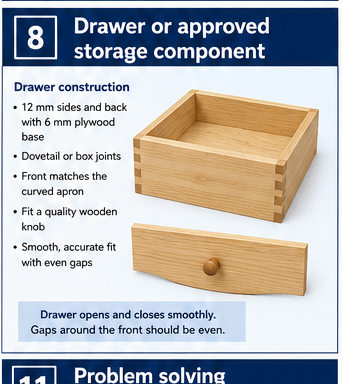
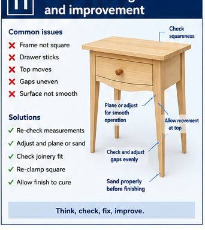

Opening
Measure the actual completed frame and compare it with the approved drawing.
Industrial Technology – Timber
Weeks 9–10 guided learning

Module presentation
Use the presentation to preview Follow the approved storage design, Clearances, reveals and fit, Constructing a square drawer or approved component before working through the theory, videos, checks and written evidence.
Two-week roadmap
Construct and fit only the storage feature shown on the approved plan, then test its operation honestly. Apply the procedures and checks to the actual bedside-table project before irreversible work continues.
Your work
Your entries save automatically in this browser. Use Print / Save PDF before leaving the page.
Theory 1

The approved drawing must guide construction because the bedside table may use a drawer, a shelf or another specified storage arrangement. Do not add or change features that are not shown on the plan. Measure each part from reliable frame reference faces rather than from uneven edges, and recheck measurements before cutting.
Components must remain square so they fit neatly within the slim tapered-leg frame without pulling it out of alignment. Consider grain orientation when marking and assembling parts, as incorrect direction can weaken components or create poor movement and appearance. Dry fit the storage parts before final assembly, checking that faces align, joints close and clearances are even.
A drawer must move smoothly without binding, while a shelf or fixed storage component must sit level and fit its supports correctly. Never force a moving part into place, as this can damage edges, distort the frame or hide an inaccurate fit that should be corrected first.
Measure the actual completed frame and compare it with the approved drawing.
Build the specified storage element square, flat and correctly oriented.
Allow only the approved working space needed for reliable operation.
Align the visible front or edge with the curved apron, legs and top as designed.
Theory 2
A moving or removable component needs controlled clearance. Too little can cause binding as timber and finish change the fit; too much creates uneven gaps, movement and poor appearance.
Use the actual opening. Check width, height, diagonals and straightness at several positions. A frame that is slightly out of square cannot be solved by using one measurement from the front edge. Identify whether the cause is the opening, the component or the hardware before removing material.
Keep reveals deliberate. A visible gap around a drawer front should appear even and relate to the approved design. Mark the high area, adjust a small amount and retest. Do not repeatedly plane every edge because one corner rubs.
Allow for the full finish system. A dry timber test may become tighter after coating. Follow the approved build sequence and teacher directions for which surfaces are finished before final fitting.
Where does the component touch or where is the gap uneven?
Is the cause squareness, twist, hardware position, a high edge or finish build?
Make the least invasive adjustment and retest the full travel.
Theory 3
Construct a drawer only when it is shown on the approved plan. Begin from reliable reference faces on the frame and drawer parts so measurements and marks remain consistent. Mark and cut the sides, front and back as a set, keeping matching parts clearly labelled and correctly oriented.
During assembly, check that the sides, front and back remain square, that joint faces close neatly and that the two diagonals are equal. The drawer base must be supported as shown on the plan so it sits flat and does not weaken the box. Dry fit the complete drawer before adhesive or final fitting, then test it progressively in the table frame.
Remove only small amounts from high or tight areas and recheck often. Never force the drawer into the opening, as this can damage edges, distort the box or hide an alignment problem. If the approved plan uses a fixed shelf instead, apply the same reference-face, squareness, dry-fit and level checks before securing it.
The functional component must be square, flat and stable before a decorative front is aligned. Equal diagonals, closed joints and a base seated as specified provide useful evidence.
Label front, back, left and right during dry assembly. Reversing a component or fitting a base in the wrong groove can create a fault that only appears after adhesive is applied.
Theory 4
The visible front is judged against the table, not only against the box behind it. Its grain, curve, edges and surrounding gaps need to align with the approved design.
Establish the reference position. Support the component in the opening and use temporary spacers or the teacher-approved method to hold the intended reveal. Check the relationship to the top, legs and curved apron from normal viewing angles.
Mark before fixing. Transfer only the required fixing positions while the front is held correctly. Remove the component for drilling where possible. Confirm screw length, pilot-hole depth and hardware orientation before driving any fixing.
Recheck after tightening. A fixing can pull the front out of alignment. Tighten gradually, alternate between points and stop when secure. Over-tightening can strip timber, distort the box or make the gap uneven.
The visible face should suit the surrounding timber and approved project style.
Gaps are checked around the full perimeter, not just at one corner.
Pilot holes and controlled tool use prevent splitting and stripped threads.
Open and close the component through its complete travel after every adjustment.
Theory 5
Fit hardware or runners only when they are specified on the approved plan. Begin all layout from reliable reference faces so matching components are positioned consistently on the frame and storage unit. Mark fixing points clearly before drilling, then check their alignment before making any holes.
Use the correct pilot-hole technique, clamp the work securely and follow normal tool-safety procedures to prevent splitting, wandering drill bits or damaged surfaces. Fit one component at a time and test the result before continuing. Matching parts must remain parallel and correctly aligned so the drawer or moving section operates smoothly.
Tighten fixings firmly, but do not over-tighten them, as this can strip holes, distort components or pull hardware out of position. If movement binds, identify and correct the cause, such as misalignment, uneven clearance or a proud fixing, rather than forcing the part. Where the approved design uses no moving hardware, focus instead on accurate fitting, secure support, level placement and clean fixed joints.
Use the correct bit, pilot hole, speed and clutch setting under teacher direction.

Hardware positions should be referenced from a reliable face or edge.

Compare corresponding positions rather than estimating by eye.

Secure parts so the drill does not pull them out of alignment.
Theory 6

A storage component is tested through its full travel, under light normal use and from several positions. A single successful movement does not prove reliable operation.
Observe before adjusting. Note where resistance begins, whether the front changes alignment and whether the component rocks, drops or rubs. Check for proud fixings, sharp metal, loose hardware and any contact with the curved apron or frame.
Separate the likely causes. Binding near one point may indicate a local high spot. Binding through the full travel may indicate insufficient clearance or parallelism. Uneven gaps may come from the opening, the component, the front or the hardware. Test one cause at a time.
Retest after each small correction. Use the least invasive approved adjustment and keep the original reference marks. Stop and seek teacher advice if correction would require changing the approved shape, joint or hardware system.
No proud metal, sharp edge or loose part can contact the user.
The approved component moves without forcing, sudden drop or damaging rub.
The front or edge returns to the approved alignment and remains secure.
Guided practice
Each incorrect option explains the misunderstanding. Use the hint, return to the theory and keep trying until the question is mastered.
Apply your learning
Write a genuine first attempt, check the live guidance, compare with the appropriate response example and improve your explanation before self-assessing.
Finish the two-week block
Your answers save in this browser as you work, but browser storage is not the official submission. Save the completed page as a PDF before closing it.
No marks, answers or personal information are sent from this webpage.